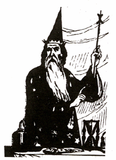
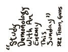

|
Tests By Doctors Prove
It Possible To Shrink
= ON OCCULTISM =
Magicians, especially since the Gnostic and the Quabala influences, have sought higher consciousness through assimilation and control of universal opposites-- good/evil, positive/negative, male/female, etc. But due to the steadfast pomposity of ritualism inherited from the ancient methods of the shaman, occultists have been blinded to what is perhaps the two most important pairs of apparent or earth-plane opposites: ORDER/DISORDER and SERIOUS/HUMOROUS.
Magicians, and progeny the scientists, have always taken themselves and their subject in an orderly and sober manner, thereby disregarding an essential metaphysical balance. When magicians learn to approach philosophy as a malleable art instead of an immutable Truth, and learn to appreciate the absurdity of man's endeavours, then they will be able to pursue their art with a lighter heart, and perhaps gain a clearer understanding of it, and therefore gain more effective magic. CHAOS IS ENERGY.
This is an essential challenge to the basic concepts of all western occult thought, and POEE is humbly pleased to offer the first breakthrough in occultism since Solomon.

|